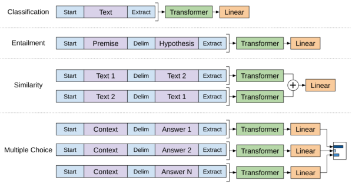
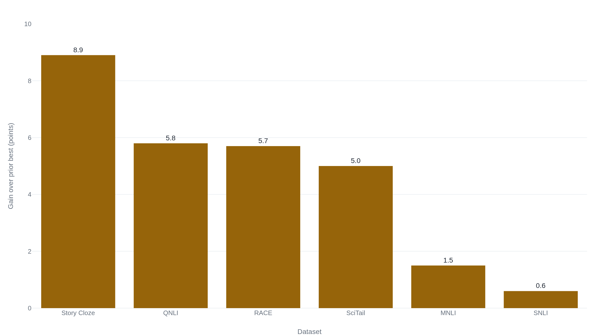

GPT-1 pre-trained a single model on unlabeled books and beat purpose-built systems on nine of twelve datasets
A 2018 OpenAI preprint made generative pre-training the default way to build a language model, and paired it with the per-task fine-tuning its own descendants would drop.
Why this matters
Every current language model, the one behind your chatbot and the one drafting your email, is built on a recipe a single 2018 report introduced: train one model on a large amount of plain text, then point it at whatever task you need. Before that report, each language task meant building a system of its own. This lesson reads the report that changed the default. By the end you will know what generative pre-training is, why one trained model could be aimed at many different jobs, and which half of the original recipe every later model threw away.
- 01
- Attention Is All You Need: the Transformer, and the decoder half GPT-1 builds on.
- 02
- BERT: the other 2018 model built on pre-training, and where it and GPT-1 part ways.
- 03
- Tokenization: how raw text becomes the tokens a model reads.
In 2018, each task still got its own model
Teaching a computer to work with language used to mean building a new system for every job. One model judged whether a second sentence follows from a first: given "A woman is playing a violin on stage," does "A person is making music" follow? A different model answered reading-comprehension questions, a third rated how alike two sentences were, and a fourth sorted film reviews into positive and negative. Each needed its own dataset of human-labeled examples, and each was trained from scratch, so every task started from nothing. In June 2018, four researchers at OpenAI published a technical report that took a different route and reported beating the best prior result on nine of twelve datasets with a single model.1
The report, "Improving Language Understanding by Generative Pre-Training," introduced the model now called GPT-1. It was a preprint marked "work in progress," not a peer-reviewed conference paper, and it never appeared on arXiv. The version OpenAI posted is the release.1
Pre-train once, fine-tune per task
The method has two stages. The first is pre-training. The model reads a very large amount of ordinary text with one simple exercise: predict the next word from the words before it. Nothing in the text is labeled or marked up. The model's only job is to guess what comes next, over and over, until it is good at it. This is called language modeling, and it needs no human annotation because the text is its own answer key. The next word is always right there.1
Generative pre-training means teaching a model to write, before teaching it any task. It reads its way through a mountain of text, predicting each next word. In doing so it has to pick up how the language actually works: grammar, facts that co-occur, the way a sentence tends to continue. Only afterward is it asked to do anything in particular.1
The second stage is fine-tuning. Take that single pre-trained model and keep training it, briefly, on one task's labeled dataset, nudging the weights it already has to fit the task. Because the model learned the shape of the language in stage one, stage two can be small.1
For stage one the model read the BooksCorpus, which the report describes as "over 7,000 unique unpublished books."1 The dataset's own origin paper, which assembled it three years earlier, counted 11,038 books.2 The word "unique" suggests OpenAI filtered or de-duplicated the set, but the report does not explain the gap. The honest figure is the one the report itself gives: over 7,000 books.
The model doing the reading is a decoder-only Transformer, the sequence architecture the Attention Is All You Need lesson teaches. GPT-1 uses the decoder half, the part that reads left to right. Its text first becomes tokens through byte-pair encoding, the splitting step the tokenization lesson covers, and each token enters as a learned embedding. The report gives the model's shape precisely: twelve stacked layers, internal states 768 numbers wide, twelve attention heads, and a feed-forward inner layer of 3,072.1 What it never gives is a total parameter count. The figure everyone quotes for GPT-1, 117 million, does not appear in this paper at all. It comes from the 2019 GPT-2 report, which lists its own smallest model at 117 million parameters and notes that this model "is equivalent to the original GPT."3
One architecture for four kinds of task
Pre-training leaves one model that knows how to read a single run of text. But the tasks do not all look like a single run of text. Entailment hands the model two sentences and asks how they relate. Similarity hands it two with no natural order between them. Multiple-choice reading hands it a passage, a question, and several candidate answers at once. A model built to read one stream has no obvious slot for a pair or a list.
GPT-1's answer was to reshape the task instead of the model. Take entailment. The two sentences are joined into one sequence: a start marker, the first sentence, a delimiter token to divide them, the second sentence, and an end marker the model reads its answer out from. The whole thing is now a single stream, exactly what the pre-trained model already knows how to read, and one added output layer turns the model's final state into a yes-or-no answer.1

The same trick covers the rest. Classification wraps one text in start and end markers. Similarity, which has no natural order, is run twice, once in each order, and the two results are added. Multiple choice runs the passage and question against each candidate answer separately and compares the scores. Four task shapes, one unchanged model, and the only thing added per task is the markers and a single output layer.1 The report calls these traversal-style input transformations. They are also the part of the recipe that would not last.
Nine datasets improved, three did not
The recipe worked on most of what the authors tried, and the report is careful about "most." Across twelve datasets in four families, inference, question answering, sentence similarity, and classification, the model set a new best on nine.1 On GLUE, an aggregate score over nine language-understanding tasks,4 it reached 72.8 against a previous best of 68.9. On the CoLA grammar test it scored 45.4 where the prior best was 35.0.1
But the size of the wins varied more than a single headline suggests. The gain over the prior best ran from 8.9 points on the Story Cloze reading test down to 0.6 on SNLI, one of the inference sets.1

And three of the twelve were not wins at all. On RTE the model scored 56.0 against a prior 61.7, and it fell short on MRPC and on SST-2, where its 91.3 percent trailed an existing 93.2. The report states these plainly and calls the near-misses "competitive" rather than claiming them.1
The most telling number is in an ablation, a test that removes one piece at a time to see what each was worth. Strip out pre-training, and train the same model only on each task's labeled data, and the average score falls from 74.7 to 59.9, a drop of almost fifteen points.1 Pre-training, the stage with no labels, was carrying most of the result. One piece the report recommends turned out not to help on average. A secondary next-word objective, left switched on during fine-tuning, held the average at 74.7, just below the 75.0 without it, and helped mainly the larger datasets.1
The half that survived
GPT-1's recipe had two halves: pre-train one model on unlabeled text, then fine-tune it, with the reshaped inputs, for each task. The later GPT models kept the first half and discarded almost everything in the second.
In 2019, GPT-2 reused the same architecture at more than ten times the size. It did its downstream tasks "without any parameter or architecture modification," so no fine-tuning, no per-task output layer, and no reshaped inputs.3 In 2020, GPT-3 went further still. At 175 billion parameters, it was "applied without any gradient updates or fine-tuning." Each task was "specified purely via text interaction with the model," with a few examples written into the prompt.5 By GPT-4 in 2023, the report discloses no parameter count and no architecture at all, and adds a training stage GPT-1 never had, reinforcement learning from human feedback.6 The task-specific fine-tuning that GPT-1 builds out in such detail is the part that fell away. The unsupervised pre-training it almost takes for granted is the part every later model kept.
The jump in size is why the second half could go. GPT-1's roughly 117 million parameters grew to 1.5 billion in GPT-2 and 175 billion in GPT-3, about 1,500 times larger.35 A model that big, trained on enough text, can be steered by a prompt where GPT-1 had to be retrained.
Within weeks of GPT-1's release, the researcher Sebastian Ruder grouped it with two other 2018 systems, ELMo and ULMFiT. Together, he wrote, they marked an "ImageNet moment" for language: the point where pre-training a whole model became the expected way to start, in place of the older habit of reusing only pretrained word embeddings.7 That reading was about the method's reach. It ran well ahead of GPT-1's own tables, where several gains were under two points. The enthusiasm was right about where the recipe would lead, and it was never a claim that the 2018 margins themselves were large. Three years later, an independent survey gave the shift its now-standard name. The "pre-train, fine-tune" paradigm GPT-1 instantiated, the survey wrote, was giving way to "pre-train, prompt, and predict." In the newer paradigm a task is rewritten to look like next-word prediction, rather than the model being retrained to fit the task.8
The takeaway
GPT-1 showed that one model, trained once on unlabeled books to do nothing but predict the next word, could then be adapted to judge entailment, answer questions, rate similarity, and sort text. It beat purpose-built systems on nine of twelve datasets. Some of those wins were fractions of a point, and three were losses. Its lasting move was the pre-training: the ablation showed that stage, with no labels at all, carried almost fifteen points of the result. The per-task fine-tuning and the reshaped inputs that made up the rest were real work, and they were the part GPT-2, GPT-3, and GPT-4 later set aside for prompting. The half that lasted is simple to state: train one model to predict the next word across enough text, and it learns enough of the language to be adapted to the rest. That is the half every model after it kept.
- 01
- Improving Language Understanding by Generative Pre-Training: the original GPT-1 report, twelve pages including every results table.
- 02
- NLP's ImageNet moment has arrived: Sebastian Ruder's July 2018 essay on why language-model pre-training looked like a turning point.
Sources
- OpenAI · Improving Language Understanding by Generative Pre-Training (Radford, Narasimhan, Salimans, Sutskever, 2018)
- Zhu et al. · Aligning Books and Movies (the BooksCorpus origin paper, ICCV 2015)
- OpenAI · Language Models are Unsupervised Multitask Learners (the GPT-2 report, 2019)
- Wang et al. · GLUE: A Multi-Task Benchmark and Analysis Platform for Natural Language Understanding (2018)
- Brown et al. · Language Models are Few-Shot Learners (the GPT-3 report, 2020)
- OpenAI · GPT-4 Technical Report (2023)
- The Gradient · NLP's ImageNet moment has arrived (Sebastian Ruder, 2018)
- Liu et al. · Pre-train, Prompt, and Predict: A Systematic Survey of Prompting Methods in Natural Language Processing (2021)